|
During the week of May 20th to June 2nd, 2010, eleven undergraduate students from the Electrical and Systems Engineering department (ESE) at Washington University in Saint Louis (WUSTL), participated in a study abroad program at Israel.
Click to view the trip schedule
The following are write ups of reflections written by the students about their experience.
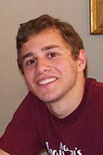
Recently, I went on a trip to Israel and the Technion, the top technical school in Israel and an institution respected around the world. As a rising junior studying electrical engineering, computer science, and business, I went with other students from the Electrical and Systems Engineering department at Washington University in St. Louis.
The trip to Israel held particular importance for me for both cultural and academic reasons. All of my family comes from a Jewish background, but before this trip I had never been to Israel. Therefore, the opportunity to visit the cultural center of my religion is an experience that means an a lot to me.
From the other perspective, it was a unique chance to learn from and exchange ideas with one of the top departments in my field in the world. I was very impressed at the amount the group was able to accomplish in the allotted time. We toured and conducted experiments in many labs at the Technion while also finding the time to visit a lot of the most important and historically significant sites in Israel.
The most striking aspect of the Technion was the scale of research. The electrical engineering department is many times the size of ours at Wash U. It seemed that research was integrated into the undergraduate curriculum in different ways there, which gave us ideas to pursue at Wash U. Because of the mandatory military service in Israel, most college-age students are several years older than in the U.S. Thus, it isn't uncommon for students to be married while in college, which I found to be an interesting contrast. Certainly, it leads to a different, more mature, social atmosphere.
The time that we spent touring the sites around Israel will be an unforgettable experience. Some of the sites we visited are places I have been hearing about from family and friends for my entire life. It was edifying to see Israeli customs and culture firsthand since I had always held certain notions from what I had heard from others. In particular, it was very meaningful to walk around the old city of Jerusalem. Standing before the Western Wall was an awing experience and one which I will always carry with me.
The experience will aid me immensely in my growth as a person and as a student. It was a great opportunity to learn about a culture and a country with an ancient and very rich history, and also to encourage the exchange of ideas between our institutions. I would also like to thank the donor who made the trip possible. We are all grateful for his support and that there are people like him who take it in hand to broaden the horizons of young scholars.
Alexander Benjamin BSEE 2012
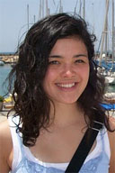
I think this trip was a Wash U highlight for all eleven of us who went - it was certainly among the most memorable experiences of my college years so far. First, I really valued the chance to spend a week at the Technion University, which I can now appreciate as one of the leading research organizations in the world. I was truly impressed by their extensive facilities, especially the machinery in the Mechanical Engineering Faculty and the satellite research equipment in the Aerospace Engineering Faculty. Second, I was glad that we participated in robotics, controls, and signal processing experiments. I felt that these labs helped to solidify concepts I've learned in classes at Wash U such as Control Systems and Systems Engineering Laboratory. Overall, the faculty and students at the Technion were warm, welcoming, and eager to make our stay there a rewarding experience.
As much as the engineering portion of the trip, experiencing Israeli culture and geography made a huge impact on me. I'm amazed at the diversity of terrains that exists in such a small country: the urban environment of Tel Aviv along the coast, the mountains in the northwest, the almost tropical lushness near the Sea of Galilee, and the desert of the south. Perhaps the most significant time for me was visiting holy sites around the Sea of Galilee and the ancient city of Jerusalem. I've been a Christian for most of my life and really value my relationship with God, so the narratives of Jesus' life in those areas are close to my heart.
And if nothing else, this trip reminded me how fortunate I am to be part of the ESE program at Washington University. An opportunity like this trip is no small thing, and I’m very grateful to have experienced it.
Sarah Fern BS SSE 2011
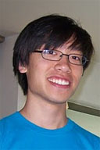
Our trip provided a packed five days of labs, research lab visits, and Technion student presentations of their projects. We performed a sampling of the control systems laboratory experiments done by the Technion students. Our labs included control of magnetic levitation disk position, characterization of a multi-spring system, balance of an inverted pendulum along a sliding track, and signal processing of audio files, and our research lab visits took us on a whirlwind tour of clean rooms in the VLSI lab, medical devices in mechanical engineering, simulated nanosatellites in aerospace engineering, and neural networks in biomedical engineering among others.
Coming from a smaller engineering school, the Technion visit instilled a sense of what was possible with an engineering centered school. The focus on integrating theory with practice particularly inspired me. Theory alone, without tangible returns, falls short of producing motivated and inspired students. At the Technion, students reap the returns of their education with intensive design projects in real world applications and participation in world class competitions. In pairs, each undergraduate completes two projects outside of the classroom curriculum. I found the setup of such projects quite different from the approach taken in my experience. In contrast to finding research positions with professors by investigating the professor’s research, approaching the professor, and arranging a position independently, labs at the Technion post their projects for undergraduates and actively recruit students to take on their projects for design work. Naturally, students select projects relating most to their interests. Projects often come from industry and many students work in industry part time during their student careers to help finance their education. In one example, a pair of students designed a closed loop control system for a quad rotor flying machine. The idea for the project came from their experience in the air force and is destined for future helicopter control system design. Working part time in industry and conducting meaningful senior design experiences, Technion students seem less stressed about finding jobs even in the current economy. Beyond the experience of a single design project, design projects often feed into one another across years and across labs. By coincidence, the project our guide from the US worked on while he was a Technion student was continued by our student guide at the Technion. In another example, software engineering students worked on software for multitouch screens while computer engineering students concurrently worked on the multitouch hardware. If there would be one thing to put on a wish list from the Technion, I would like to see such a degree of collaboration in our projects at home to give projects an opportunity to grow beyond the confines of a single semester and single specialty.
Sam Fok BSEE/BSBME 2011
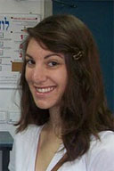
As a recent transfer from the school of Arts and Sciences – I’d considered myself a future English major since grade school – I naturally had doubts about what Engineering could offer me. I’d always loved math and science, especially physics, and the few introductory engineering courses I’d taken absolutely fascinated me. I loved the theory behind it all and thus declared my major in electrical engineering, but the application of engineering worried me.
Because I’d spent my childhood with my nose buried in novels instead of tinkering with robots as many of my fellow engineers had done, I had always harbored a slight feeling of inadequacy when viewing other students’ engineering projects and research. Learning the material in a textbook was never a problem (I’m an experienced reader, after all), but the prospect of innovating, the very core of engineering, seemed insurmountable.
When I first arrived at the Technion, I was a bit intimidated by its worldly, brilliant students. The projects that their undergraduate and graduate students are working on are literally state of the art. They envisioned and created a robot that can scale walls, microchips with millions of components individually designed and drawn on the computer by hand, new GPS-type technology, the world’s smallest Bible (.5 mm2, a gift to the Pope), a self-stabilizing helicopter, and so much more. It was overwhelming but so fascinating. The Technion is amazing – new breakthroughs are made there almost daily – and I felt truly privileged to be there.
Touring the campus, seeing all the impressive buildings and statues, the obelisk that appears to breathe, the mature and talented students milling around campus chatting casually; I understand where their inspiration comes from. There is a magic in the air there – a flame of passion, ambition, and curiosity burns in the eyes of its inhabitants that they transfer to the very air around them. It’s contagious. I, as well as many of my group mates, soon felt this passion burning in our own hearts – a desire to discover.
But what inspired me most were the student ‘senior projects’. Although the projects were indeed complex and high-level, I could follow their thought-processes, and even felt like I could undertake a project like that with a good advisor.
For this, I am sincerely grateful. Not simply for affording me the opportunity to visit a foreign country and experience a foreign culture, but for allowing me a glimpse of what it means to engineer – a glimpse of my future. A future that, because of this journey, I can’t wait to begin.
Lisa Goldman BSEE 2012
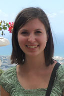
I am very grateful to have been part of the Washington University Electrical and Systems Engineering trip to the Technion, a leading science and technology university, in Israel. It is fascinating to see how engineering fits into the culture of Israel. Due to their political relationships with other countries and people groups, defense is very important to Israel. Upon graduating from high school, students complete a minimum of two years of military service. This life experience gives them a perspective during college that seems more focused on work and the world outside the university. Many of the student projects have potential military applications. Before the trip to Israel, military applications did not interest me as much as other aspects of engineering. However, after seeing many examples and their importance while in Israel, I plan to continue to learn more.
Our group was able to visit many different engineering labs during our time at the Technion. This was a very valuable part of the experience because we saw many collaborative projects among Electrical and Systems Engineering and other fields. Professors in a control and robotics lab and a signal and imaging lab also designed hands-on assignments for us. Additionally, we saw several student undergraduate research projects. The students put many hours and extensive effort into their work, and it was impressive to see what they accomplished.
In addition to engineering, we discovered more about the complex culture of the area and were able to visit many significant historical and religious places. We spent time in many different cities including Tel Aviv, Haifa, Jerusalem, Nazareth, and a Druze village. Our group also visited the Sea of Galilee and drove up in the Golan Heights. We swam in the Mediterranean Sea and floated in the Dead Sea. It was a delight to try many new kinds of food, and I miss the delicious kabob, falafel, baklava, and Bulgarian cheese now that I am back in the U.S.
One great part of the trip was meeting new people. I greatly enjoyed conversing with the students and faculty at the Technion. Our hosts made us feel very welcome and showed us incredible kindness and hospitality. It was interesting to see what it might be like to be a university student in another country. Another great benefit was forming new friendships with students from the ESE department at Washington University. We got to know each other much better through our time abroad then we had through classroom experiences.
Overall, the trip was an excellent experience. Much can be learned from seeing engineering from the perspective of another culture. I am very thankful for our gracious hosts in Israel, the members of the Electrical and Systems Engineering Department at Washington University who organized the trip, and our exceptionally generous donor who made this trip possible.
Katherine Stammer BS SSE 2012
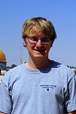
Albert Einstein once said, "Israel can win the battle for survival only by developing expert knowledge in technology." As we learned, the Technion, located in Haifa, Israel, was conceived largely to realize this ambition; it is the oldest technical institution for higher learning in that part of the world. Over the years it has grown from its roots in downtown Haifa to become the heart of Israeli technology and industry. As a lowly undergraduate who just finished his freshman year, being invited to the Technion halfway around the world was no small matter.
Our visit to the Technion, covering five days of the trip, introduced us to nearly every engineering department at the university. The departments of Electrical, Mechanical, Aerospace, Computer Science, and Biomedical Engineering were among those that we had the privilege to see. Professors, students, and researchers presented their departments’ projects and academic disciplines with slide show presentations and live demonstrations. Projects at the Technion ranged from flying quadcopters to surgical aids, from “fire-fighting” robots and hexapods to bipedal robots and UAV airplanes. As we learned, such tangible engineering projects are a staple of an undergraduate education at the Technion.
In addition to learning about engineering at the Technion, we also actively participated in engineering during our many lab sessions. We used methods and concepts such as proportional-integral-derivative algorithms to solve problems such as balancing a pole with an electronic stepper motor. Other labs served more as an overview of a specific area of signal processing by introducing us to areas such as audio signal processing and speech synthesis.
On the whole, the trip inspired me to seek out my own independent study project. Although we do have the senior design projects at the end of our undergraduate careers here at Washington University, students at the Technion often complete two or more research or design projects as undergraduates in addition to working 15+ hours a week in industry! In light of this it seems that, rather than distracting from an education in electrical engineering, engaging in self-motivated projects can be a rewarding experience that enhances and expands students' knowledge of electronics and real-world problem solving.
I am truly thankful for the opportunity to visit the Technion and to tour the unique nation it calls home. It was my first time in the middle east and I enjoyed every minute of it.
Andrew Wiens BSEE 2013
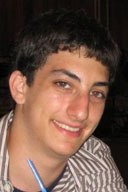
Having the opportunity of being immersed in a week of learning at a top-tier university in a foreign country was a tremendously beneficial experience for my education and perspective as an engineering student. The experience as a whole really seemed to help me put my coursework at WashU in context with the broader areas of engineering and within electrical engineering in particular.
I especially enjoyed the detailed and informative tours our group was given of The Technion's different engineering departments and the electrical engineering labs specifically. These tours provided a very unique experience which exposed me to variety of fields of engineering completely new to me. Even within one?s own major I feel most undergraduate students go through school without ever getting any serious exposure to the research being done across their department. Having numerous faculty give our group in-depth tours of their labs and present their research to us was a truly unique opportunity. A student with a particular area of interest can learn a lot from reading websites and publications, but having faculty present the relevant and interesting aspects of their work provided a completely different level of educational benefit to our group. For an area of study as interactive as engineering, I found it tremendously helpful that these presentations were tailored to our questions and our interests. The discussions we had helped me understand in a deeper way the approach of each lab?s work along with their challenges by providing a very interactive experience.
The part of the program in which Technion students presented their senior projects was probably the most memorable experience for me. The Technion's curriculum puts a considerable emphasis on students' senior projects to the point that multiple labs and full time staff are dedicated to supporting students in their work throughout these projects. Listening to students explain their ideas and how they used their educational background to plan a design project really resonated with me as an engineering student entering the final year of my degree. From the impressive student projects to the school's curriculum, I really felt I got a lot out of learning about the approach that this exceptional engineering school takes in preparing its students to become engineers.
I can't stress enough how valuable I felt this experience was for my educational progress and how much I appreciate the electrical and systems engineering department offering me the opportunity to participate in this remarkable trip.
Raphael Schwartz BSEE 2011
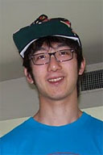
The trip was extremely helpful for me because I switched into Electrical and Systems Engineering during my second semester of junior year. Although I was somewhat familiar with class work, which of course consists mostly of theoretical learning and exercises, I was not exposed enough to real life experiences associated with what electrical engineers do. During the trip, our group actively interacted with many professors and students at Technion; we visited various labs such as the signal processing lab and control lab where our group was given specific labs to work on. In addition, many Technion students introduced their individual projects which ranged from flight control to signal processing robots. In the end, it made me realize how different real world projects are from what students learn from their classes and textbooks. Moreover, I came to appreciate what it means to be an engineer and how efforts made by engineers change our everyday lives. On top of all these engineering related experience, visiting Israel in itself was a valuable chance. Visiting ancient sites such as Jerusalem and Jordan River is something I’ll never forget.
Having international trips like this, I believe, is a very effective means to attract students to join our engineering school and promote the Electrical and Systems engineering department. Needless to say, it is also an amazing way for engineering students to go out internationally and interact with foreign people.
I would like to thank everyone, including Professor Nehorai and the generous donor, who has made this trip possible, and I hope other rising engineers take this unique opportunity to enhance their understanding of the engineering world, and, of course, it’s a good way to visit other countries and diversify one’s experience.
Charlie Kang BS SSE 2011
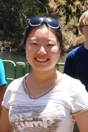
I am very grateful to have had the chance to be part of the study abroad program organized by the Electrical and System Engineering department. This experience was not only significant for me academically and culturally, but also socially.
As prestigious an institute as Technion is, it is easy to focus only on the academic opportunities. However, I did not fall in love with the school just because of the technology. I fell in love because of the hospitality of the school, the friendliness of the people and the welcoming atmosphere. During our stay at Techion, we participated in several experiments. The instructors patiently explained how to us the equipment pointed out our mistakes and helped us with our questions. They even went through the trouble to translate the lab instructions from Hebrew to English. This wonderful experience taught me how important a positive attitude is when treating others.
This trip also brought me closer to the people in the Electrical and System Engineering department at Washington University. As a student that just transferred to Wash U this past fall, adjusting to a new environment and making new friends can be challenging sometimes, especially as academic studies are the priority for most students. This trip on the other hand, gave me opportunity to conduct meaningful conversations with students and professors. The valuable time we spent together was essential for our friendship and made the department one big family.
I want to sincerely thank everybody that made this trip possible for us eleven lucky students. The knowledge we gained and the friendship we developed will last a lifetime.
Sophia Cui BSEE/BSBME 2013
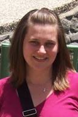
Our trip was jam-packed with laboratory tours, research presentations, hands-on engineering experiments, and more Israeli tourism than one could ever imagine crammed into one, short 8 day time period. I cannot speak for all 11 students that were able to take part in this opportunity, but I know it is one of my most memorable experiences both at Wash U and in my life in general.
My personal experience at the Technion, a world-renowned science and technology university located in Haifa, Israel, was one that will follow me throughout my career. During our visit we got a first-hand look at many of the university’s engineering departments as well as quite a few different areas of both student and professor research. Because the Technion is a technical institute, it has a much larger engineering program than Wash U and therefore has broader topics of research throughout its departments. As a result, I was able to see even more real-world applications of the concepts I have learned at Wash U than would normally be possible.
I found it especially interesting to see how many of the Technion students worked together to combine electrical and systems engineering with other engineering disciplines for their research projects. Sometimes, projects were even continued throughout multiple semesters and passed on to new, incoming students. Wash U has just recently started a few multi-semester research projects, but these are professor-initiated research as opposed to student research projects. I think would be really interesting for students from different departments to have the opportunity to work together to develop an ongoing, student-led project.
These engineering and technical experiences were not the only memorable moments of the trip however. Before this, I had never been out of the country, but now that I have, I want to travel more than ever before. It was amazing to see the unique cultural and terrain diversity. While there, we were able to see the fast-paced city of Tel Aviv, the ancient cities of Jaffa and Akko, many religious sites in Jerusalem and Nazareth, and the Druze Villages near Haifa. We even had the opportunity to swim in the Dead Sea.
These cultural experiences have definitely helped to shape me as a person, while the technical experiences helped further my educational and career goals. I cannot thank the university enough for organizing this opportunity, nor the generous donor who made this trip financially possible for all of us. This experience is one for which I will be eternally grateful.
Alison Schroeder BS SSE 2012
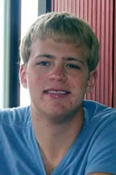
My name is Evan Nixon and I am a junior studying systems and electrical engineering at Washington University in St. Louis. I have had the recent privilege of attending a trip to the one of the best engineering schools in the world with the Electrical and Systems Engineering department.
Our trip to the Technion was incredible. The university is widely recognized as one of the finest in the world and has created great amounts of technology that we use in our everyday lives. At the Technion we preformed complicated labs, toured insanely expensive high-tech facilities, and saw research of the highest caliber. The work I saw being done in the Technion was not only unique and cutting-edge, but also interesting and inspiring. I really appreciated the opportunity to see the work of renowned engineers. It was also interesting to see work done on a large, unrestricted scale. The ability for students to design microchips and print them at their university is just one example of the scale on which the Technion operates.
A large difference between the Technion and WashU is the amount of research that students participate in. Each student completes a two semester intensive research project over their time at the school. It was very impressive what some students ended up with – we saw some very advanced projects that students put together.
I learned a lot culturally from our trip as well. We visited Jerusalem, Haifa, Tel-Aviv, and generally the countryside of Israel. The experience of visiting some of the holiest places in the world was incredible. I found it very significant to visit the Western Wall and the Chapel of the Ascension. It is a rare occurrence to have the opportunity to visit places mentioned in holy texts, and I feel very fortunate to have seen them.
I also thought it was interesting to experience different attitudes towards life. Students and professors that we met taught me a lot about Israel. Military presence is a part of daily life which affects everyone in Israel. Every citizen of Israel must complete two years of military service either before or after college, which creates an interesting environment. It was a little intimidating at first that even the freshmen were older than us because of their military service before college.
My reflection and praise for this trip must end with food – the falafel, shawarma, and hummus were remarkable. Eating in Israel was a little different – everyone ate a little slower. Also food was sometimes shared with the entire table. Our Druze dinner was awesome and unforgettable – we sat at a long table and so much food came out that we started stacking plates on top of each other to make enough room.
Overall, this experience was one that I truly value. Seeing the Technion and Israel was culturally significant, inspirational, and generally fun.
Evan Nixon BS SSE 2011
|